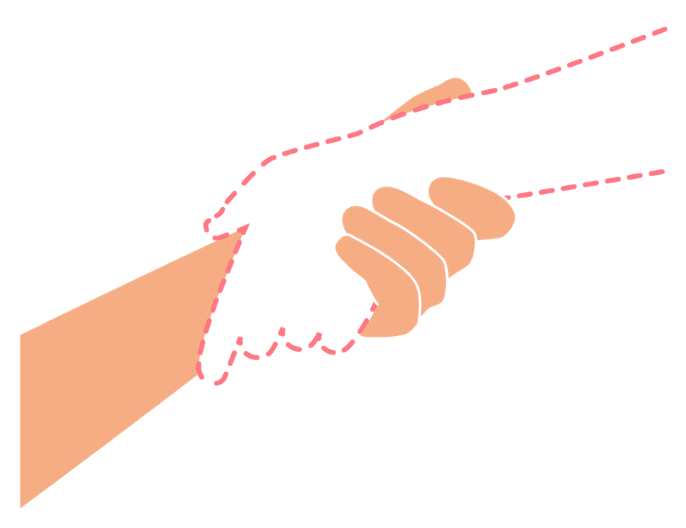

Mit der Academy erhaltet ihr im Business-Plan praxisnahe Lernmodule rund um Facilitation und wirksame Transformation.
Gemeinsam mit 9 Spaces zeigt Plan International Deutschland, wie wertebasiertes Arbeiten Orientierung gibt – nach innen wie nach außen.

Dieses Tool hilft euch, gemeinsam im Team unsichtbare Arbeit zu identifizieren und explizit zu machen.
Dieses Tool stärkt dein Bewusstsein für weiße Privilegien.
Dieses Tool hilft euch dabei, individuelle Unterschiede und kulturelle Identitäten im Team zu erkunden und wertzuschätzen.
Ein Tool, das euch dabei hilft, die individuellen Stärken eurer Team-Mitglieder sichtbar zu machen.